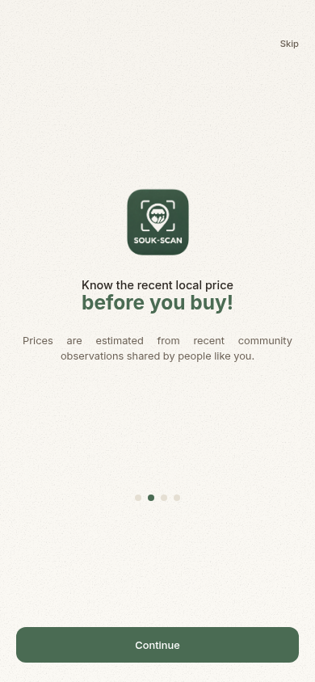

Choose your region
Select a Moroccan region manually or use optional location detection.
Prices are estimated from recent community observations shared by people like you
Choose a category.
Prices appear in the square.
FOOD PRICES
Choose a stall around the square
to explore food prices.
Choose your region
Community estimates are regional. Wholesale references are dated prices from the Casablanca market, not retail prices in your region.
Find prices near you
Compare community estimates
and dated wholesale references.
Select a Moroccan region manually or use optional location detection.
See estimates from recent community observations and separate, dated wholesale references.
Report a price you saw or paid. You can update your report the same day.
Your reports stay private. Other users see estimates, not your individual reports or account details.
Download the Android app
or open SOUK-SCAN in your browser.
Free. Available in Arabic, French and English.
Android APK
installation may require allowing this source.
On iPhone? Use
the web app in your browser.

Community prices are estimates from recent observations. Dated wholesale references are shown separately. Prices vary by market, quality and date. Choose your region to see its community estimates.
The app shows “Not enough data yet” when there are too few valid recent observations to estimate a price.
No. SOUK-SCAN shows price information. It does not sell food or offer delivery.
Download the APK on your Android phone, open it, and follow the installation prompts. Your phone may ask you to allow installation from your browser. You can also use the web app without installing anything.